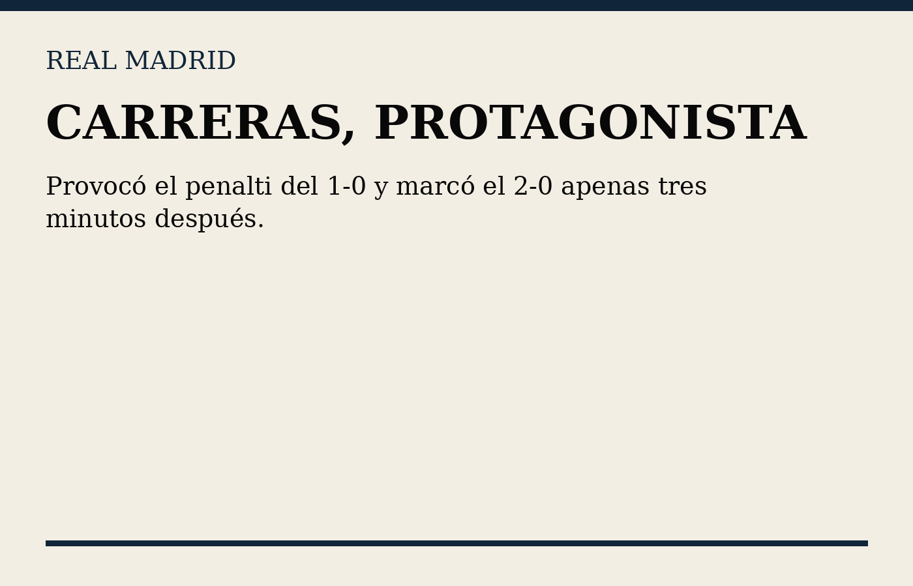
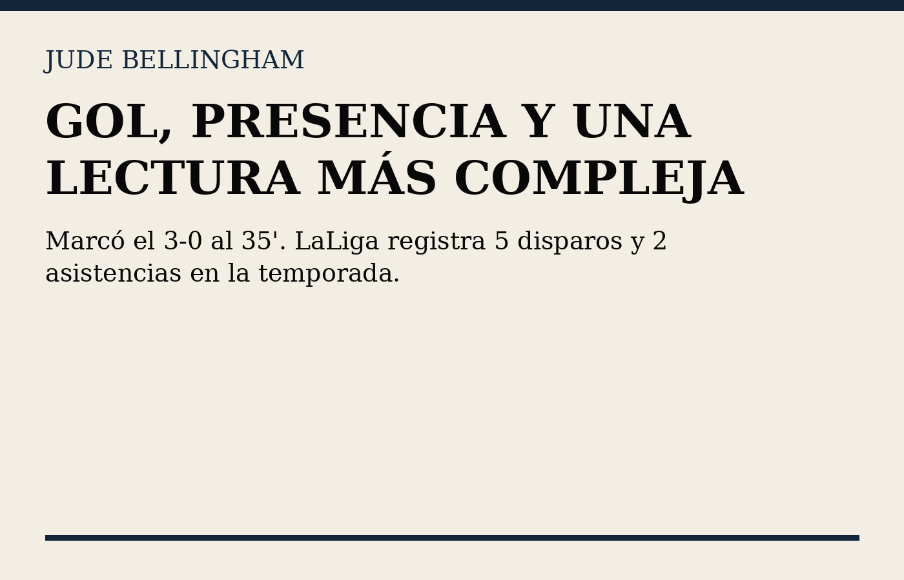

Mbappé vuelve a decidir
Doblete: 14' y 90+1'.

Doblete: 14' y 90+1'.

Provocó el penalti y marcó el segundo.

Gol al 35' para el 3-0.

El Madrid fue muy superior en la primera mitad, pero el Rayo reaccionó y generó peligro tras el descanso.

Marcó el tercero. Su rendimiento merece una lectura más amplia que el simple dato del gol.

La victoria fue clara, pero el segundo tiempo dejó preguntas para los próximos partidos.
El resultado es contundente, pero el partido tuvo dos caras. La primera mitad fue brillante; tras el descanso, Rayo encontró espacios y redujo distancias.
“El marcador tranquiliza. El juego todavía tiene preguntas.”
— Meryem Brown, La Tribuna

Madrid resolvió con calidad individual y una gran primera mitad. Pero el tramo posterior al gol de Camello recordó que el equipo todavía puede perder control.